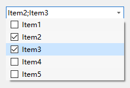

QCtmMultiComboBox Class
可多选的ComboBox. More...
| Header: | #include <QCtmMultiComboBox.h> |
| Inherits: | QComboBox |
Public Functions
| QCtmMultiComboBox(QWidget *parent) | |
| virtual | ~QCtmMultiComboBox() |
| QVariantList | checkedDatas() const |
| QStringList | checkedItems() const |
| bool | isChecked(int index) const |
| QAbstractItemModel * | model() const |
| void | setChecked(int index, bool checked) |
Reimplemented Protected Functions
| virtual void | setModel(QAbstractItemModel *model) override |
Detailed Description
截图:

Member Function Documentation
QCtmMultiComboBox::QCtmMultiComboBox(QWidget *parent)
构造函数 parent.
[virtual] QCtmMultiComboBox::~QCtmMultiComboBox()
析构函数.
QVariantList QCtmMultiComboBox::checkedDatas() const
返回被选中的项目数据.
See also checkedItems() and setChecked.
QStringList QCtmMultiComboBox::checkedItems() const
返回被选中的项目.
See also checkedDatas() and setChecked.
bool QCtmMultiComboBox::isChecked(int index) const
返回第 index 项是否选中.
See also setChecked.
QAbstractItemModel *QCtmMultiComboBox::model() const
This is an overloaded function.
返回数据来源.
See also setModel().
void QCtmMultiComboBox::setChecked(int index, bool checked)
设置第 index 项是否选中 checked.
See also isChecked.
[override virtual protected] void QCtmMultiComboBox::setModel(QAbstractItemModel *model)
Reimplements: QComboBox::setModel(QAbstractItemModel *model).
This is an overloaded function.
设置数据来源 model.
See also model().